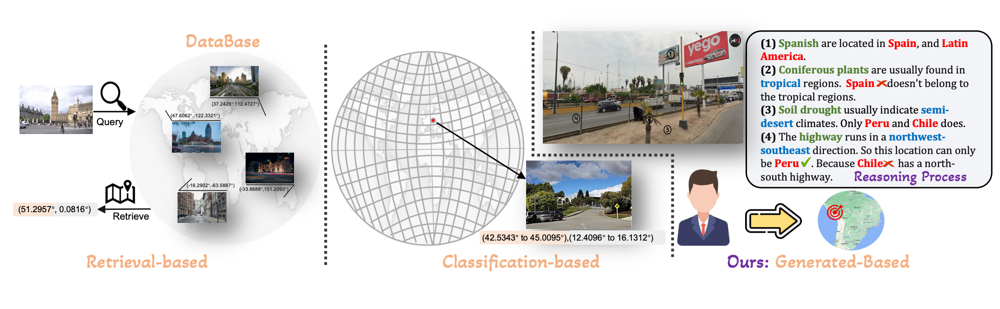
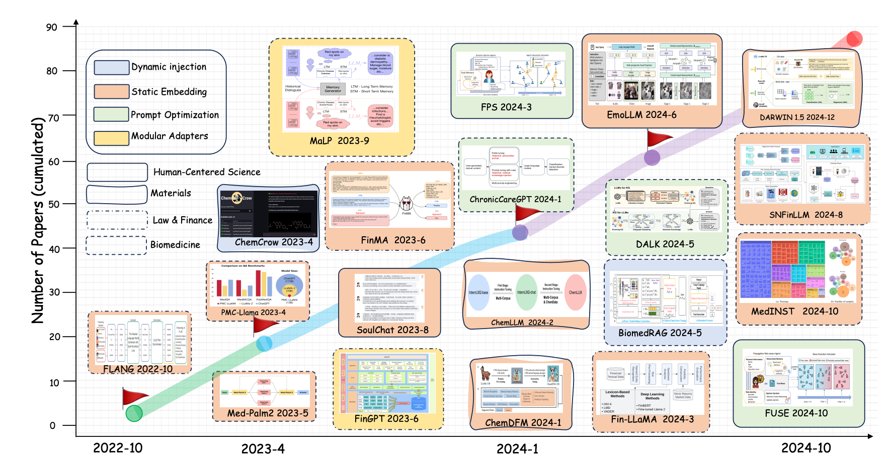
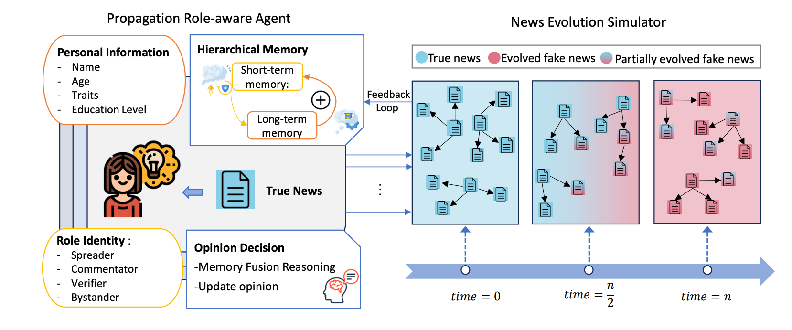
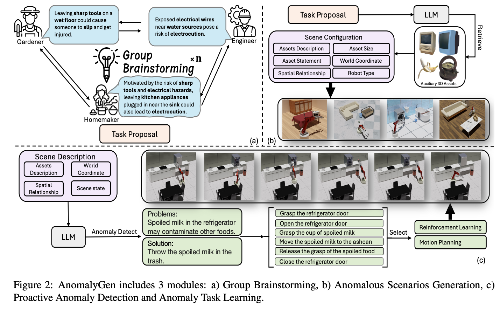
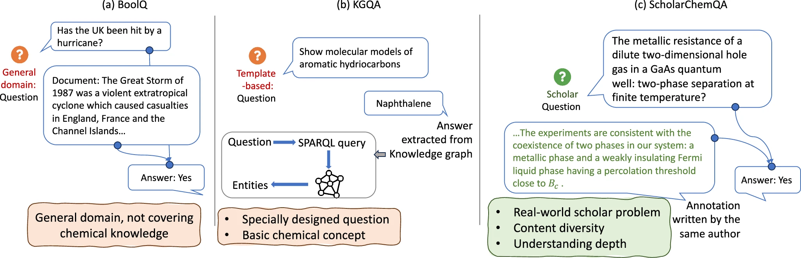
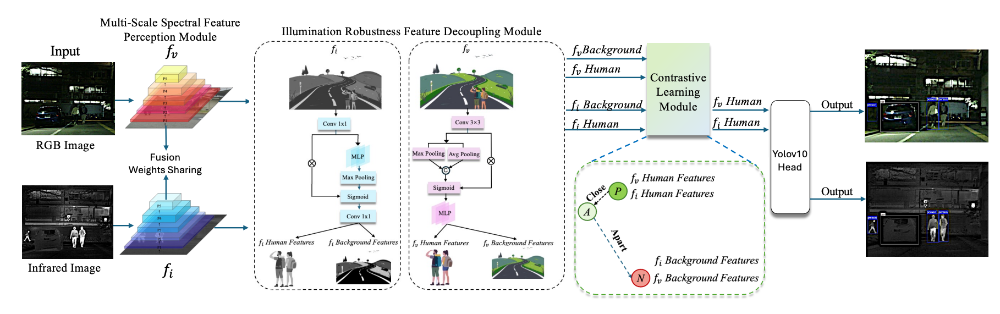
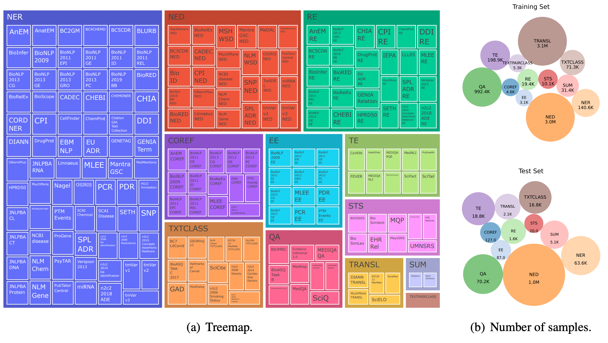
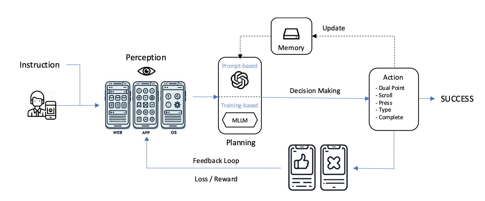

I am supervised by Prof. Xiuying Chen and
Prof. Xiaojun Chang.
I received my Bachelor of Engineering (Honours) in Software Engineering with First Class Honours from the University of Technology Sydney,
where I also received the Dean's List 2025 prize (Top 2% of students).
Before that, I was a member of UTS-NLP since Oct 2023,
where I was fortunate to be advised by Prof. Ling Chen
and mentored by Prof. Meng Fang.
Currently working on multimodal reasoning, geolocation, embodied agents, and trustworthy MLLMs.
Selected works · the freshest acceptances
(ICML 2026 ×2, ACL 2026 ×6 · 1 oral, AAAI 2026, NeurIPS, Nature Computational Science)
are listed on Google Scholar.

ACL 2025
Zirui Song*, Jingpu Yang*, Yuan Huang*, Jonathan Tonglet, Zeyu Zhang, Tao Cheng, Meng Fang, Iryna Gurevych, Xiuying Chen
GeoComp: 25M metadata entries and 3M geo-tagged locations from 740K players, plus GeoCoT reasoning and GeoEval.

EMNLP 2025
Zirui Song*, Bin Yan*, Yuhan Liu, Miao Fang, Mingzhe Li, Rui Yan, Xiuying Chen
A taxonomy of domain knowledge injection: dynamic injection, static embedding, modular adapters, and prompt optimization.

EMNLP 2025
Yuhan Liu, Zirui Song, Xiaoqing Zhang, Xiuying Chen, Rui Yan
FUSE simulates how a tiny slip of misinformation evolves into full-blown fake news inside LLM agent societies.

NAACL 2025
Zirui Song*, Guangxian Ouyang*, Meng Fang, Hongbin Na, Zijing Shi, Zhenhao Chen, Yujie Fu, Zeyu Zhang, Shiyu Jiang, Miao Fang, Ling Chen, Xiuying Chen
AnomalyGen builds virtual anomaly scenes without human annotation to make household robots more robust.

Communications Chemistry
Xiuying Chen, Tairan Wang, Taicheng Guo, Kehan Guo, Juexiao Zhou, Haoyang Li, Zirui Song, Xin Gao, Xiangliang Zhang
ScholarChemQA: a large-scale QA dataset constructed from chemical papers. Code

ECAI 2026
Rui Zhao*, Zeyu Zhang*, Yi Xu, Yi Yao, Yan Huang, Wenxin Zhang, Zirui Song, Xiuying Chen, Yang Zhao
An adaptive spectral optimization framework for multispectral pedestrian detection.

EMNLP 2024
Wenhan Han, Meng Fang, Zihan Zhang, Yu Yin, Zirui Song, Ling Chen, Mykola Pechenizkiy, Qingyu Chen
133 biomedical NLP tasks and 7M+ training samples in one instructional meta-dataset.

ECCV 2024
Rizhao Cai*, Zirui Song*, Dayan Guan, Zhenhao Chen, Yaohang Li, Xing Luo, Chenyu Yi, Alex Kot
A comprehensive benchmark for the cross-style visual capability of LMMs.
Toolkit & Code

ARR 2025
Biao Wu*, Yanda Li*, Meng Fang, Zirui Song, Zhiwei Zhang, Yunchao Wei, Ling Chen
Note: the first author removed my co-authorship during the second submission without explanation. I believe I still have credit for this work and disagree with that decision.
* equal contribution
Multimodal AI
My current research goal is to integrate multimodal information to improve the performance of large language models, with applications in geolocation and embodied AI.
MLLMsGeolocationEmbodied AIWorld Understanding
Trustworthy AI
I am also interested in jailbreak and attack issues of multimodal language models, particularly in vision and audio modalities.
JailbreakVision SafetyAudio SafetyRobustness
Conference Reviewer
NeurIPS 2027ICML 2026ACL 2026ECCV 2026
EACL 2026ICLR 2026AAAI 2026EMNLP 2025
COLM 2025ACM MM 2025NeurIPS 2025ACL 2025
NAACL 2025ICME 2025IJCAI 2025EMNLP 2024
Journal Reviewer
IEEE TPAMI
IEEE TAI
First year of the PhD. The desert keeps its own hours, and so do I.
Lately I have been circling one question: what does it mean for a model to understand the world it has been shown. Not the act of prediction (we have plenty of that), but the quieter thing underneath. Whether it knows where it stands. Whether it can tell when it is wrong. Whether, given a photograph of a street it has never seen, it can reason its way home.
Most of what I work on lives near this question. Multimodal reasoning. Geolocation. Embodied agents that must act in places they have never been. The trust we extend, or refuse, to what a model claims it sees. I keep walking into the same room through different doors.
I read more than I write. I rewrite more than I publish. Some of the papers listed under my name belong to a younger version of me, and I am still learning how to be honest about that.
I have never loved being alive this much. New cities. New languages overheard on the bus. New collaborators who became friends before they became coauthors. I owe the courage of this season to the UAE Government Scholarship, which let me walk through doors I had only read about. I do not take that lightly.
What I am holding this season
- a draft I do not yet know how to finish
- a suspicion that our benchmarks have been answering the wrong question
- a quiet thank-you to the people who wrote back to me when I was an undergraduate and unsure of everything
The plan, if it can be called one, is to stay here long enough to plant something. The desert is not empty; it is patient. I would like to grow a small oasis on it, the slow kind, one paper, one student, one honest conversation at a time.
If you are working on something you cannot let go of, I would like to hear about it. My inbox is mostly quiet after midnight.
Last updated: May 2026